방향 버튼으로 갈 곳을 선택합니다. 새롭게 갈 수 있게 된 에어리어는 「NEW」 마크가 표시됩니다. 선택지의 좌측에 있는 「로그아웃」을 선택하면, EDEN에 액세스할 때 사용한 포인트로 돌아옵니다.
키워드에 대하여
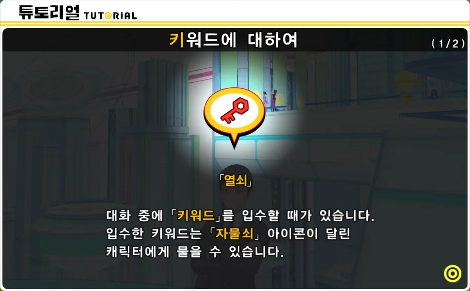
대화 중에 「키워드」를 입수할 때가 있습니다. 입수한 키워드는 「자물쇠」 아이콘이 달린 캐릭터에게 물을 수 있습니다.
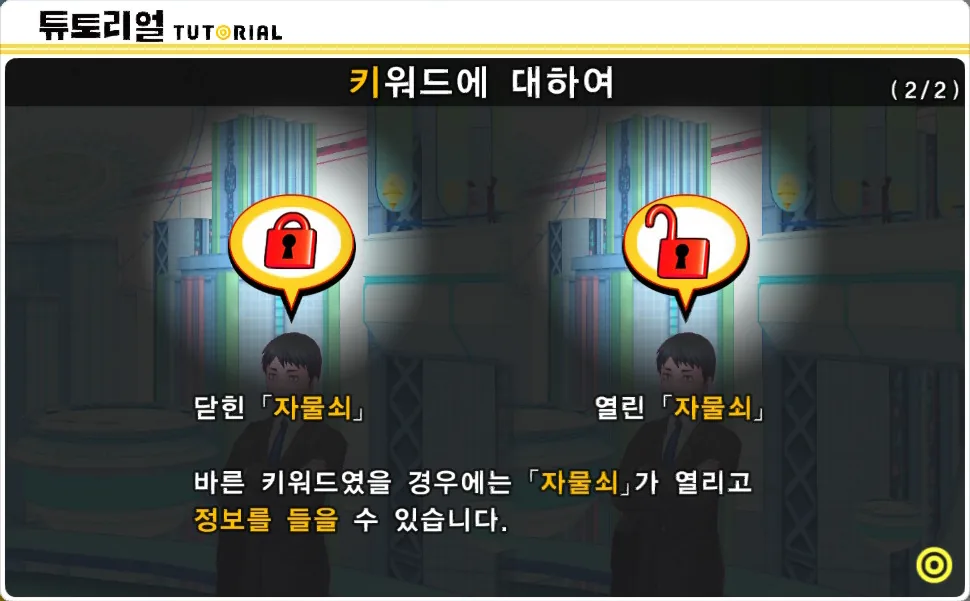
바른 키워드였을 경우에는 「자물쇠」가 열리고 정보를 들을 수 있습니다.
저장에 대하여
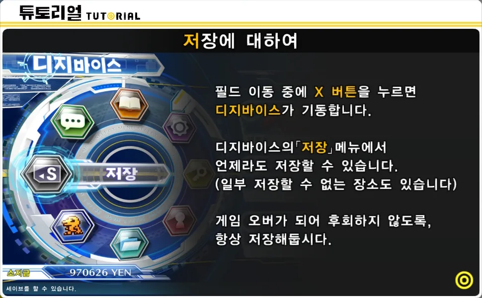
필드 이동 중에 X 버튼을 누르면 디지바이스가 기동합니다. 디지바이스의 「저장」 메뉴에서 언제라도 저장할 수 있습니다. (일부 저장할 수 없는 장소도 있습니다) 게임 오버가 되어 후회하지 않도록, 항상 저장해둡시다.
디지몬과의 조우
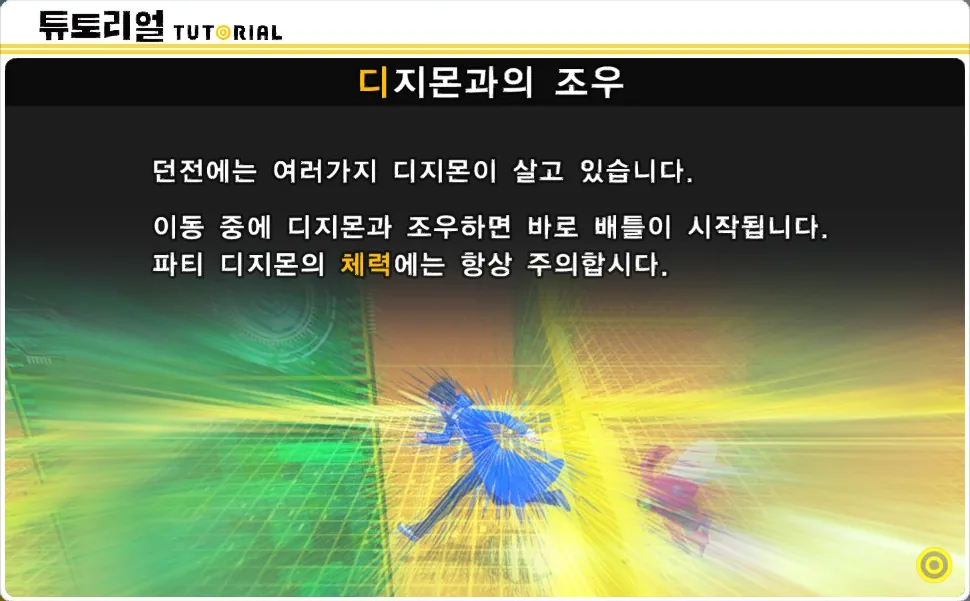
던전에는 여러가지 디지몬이 살고 있습니다. 이동 중에 디지몬과 조우하면 바로 배틀이 시작됩니다. 파티 디지몬의 체력에는 항상 주의합시다.
커넥트 점프
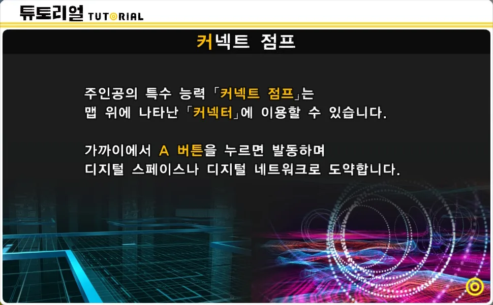
주인공의 특수 능력 「커넥트 점프」는 맵 위에 나타난 「커넥터」에 이용할 수 있습니다. 가까이에서 A 버튼을 누르면 발동하며 디지털 스페이스나 디지털 네트워크로 도약합니다.
디지털 네트워크
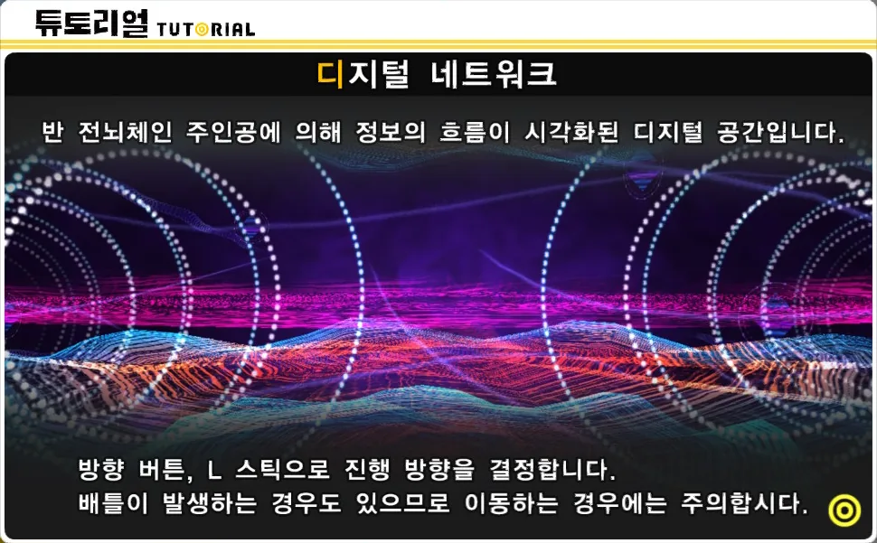
반 전뇌체인 주인공에 의해 정보의 흐름이 시각화된 디지털 공간입니다. 방향 버튼, L 스틱으로 진행 방향을 결정합니다. 배틀이 발생하는 경우도 있으므로 이동하는 경우에는 주의합시다.
액세스 포인트에 대하여
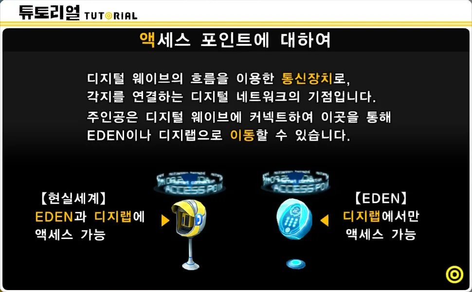
디지털 웨이브의 흐름을 이용한 통신장치로, 각지를 연결하는 디지털 네트워크의 기점입니다. 주인공은 디지털 웨이브에 커넥트하여 이곳을 통해 EDEN이나 디지랩으로 이동할 수 있습니다. 【현실세계】 EDEN과 디지랩에 액세스 가능 / 【EDEN】 디지랩에서만 액세스 가능.
배틀
스테이터스와 타임라인
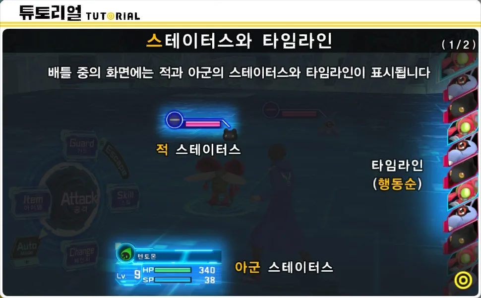
배틀 중의 화면에는 적과 아군의 스테이터스와 타임라인(행동순)이 표시됩니다.
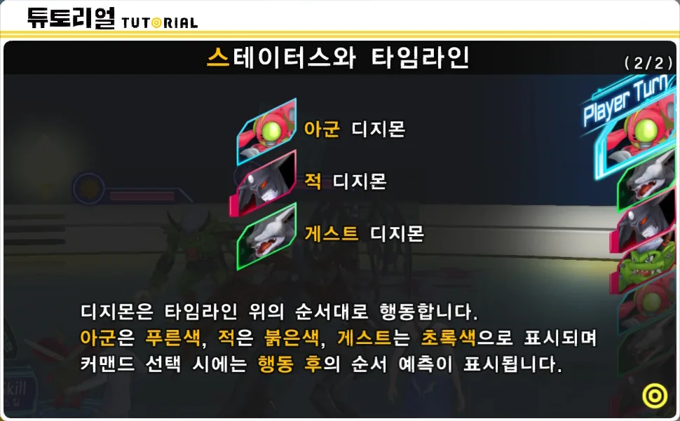
디지몬은 타임라인 위의 순서대로 행동합니다. 아군은 푸른색, 적은 붉은색, 게스트는 초록색으로 표시되며 커맨드 선택 시에는 행동 후의 순서 예측이 표시됩니다.
배틀 중의 커맨드
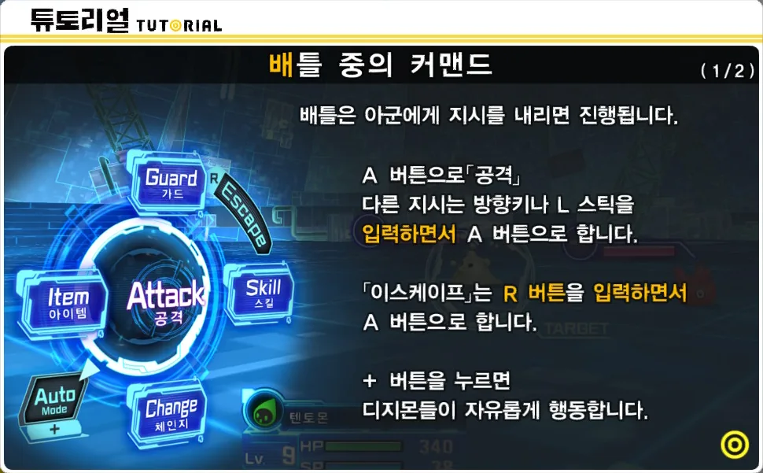
배틀은 아군에게 지시를 내리면 진행됩니다. A 버튼으로 「공격」, 다른 지시는 방향키나 L 스틱을 입력하면서 A 버튼으로 합니다. 「이스케이프」는 R 버튼을 입력하면서 A 버튼으로 합니다. + 버튼을 누르면 디지몬들이 자유롭게 행동합니다.
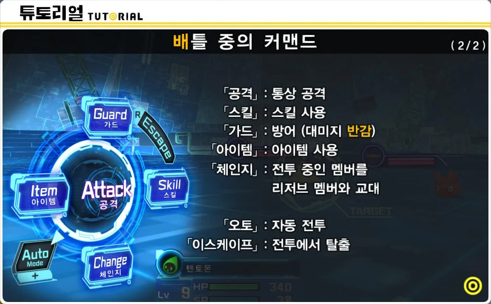
「공격」: 통상 공격 / 「스킬」: 스킬 사용 / 「가드」: 방어 (대미지 반감) / 「아이템」: 아이템 사용 / 「체인지」: 전투 중인 멤버를 리저브 멤버와 교대 / 「오토」: 자동 전투 / 「이스케이프」: 전투에서 탈출.
디지몬 스캐너
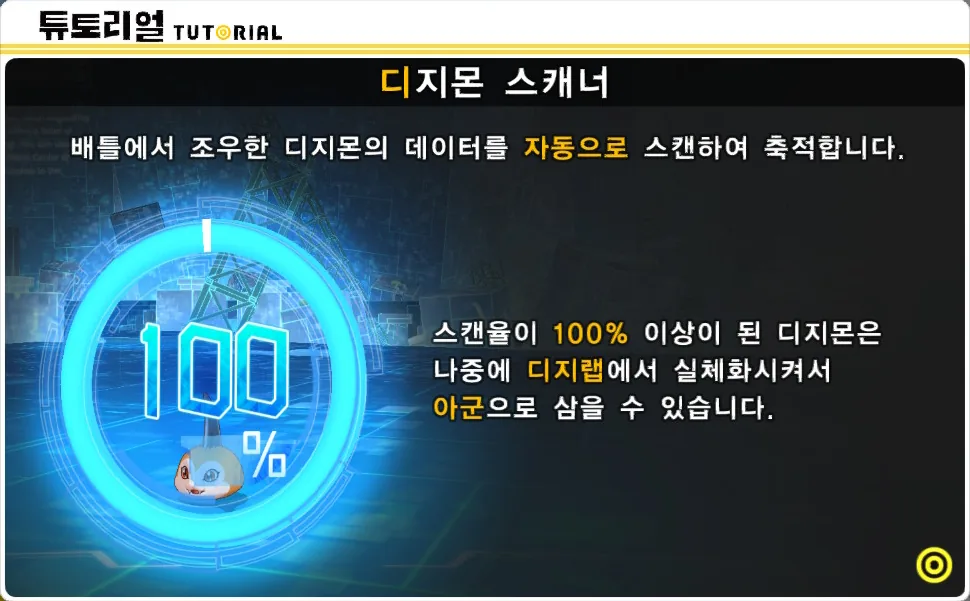
배틀에서 조우한 디지몬의 데이터를 자동으로 스캔하여 축적합니다. 스캔율이 100% 이상이 된 디지몬은 나중에 디지랩에서 실체화시켜서 아군으로 삼을 수 있습니다.
종족과 속성
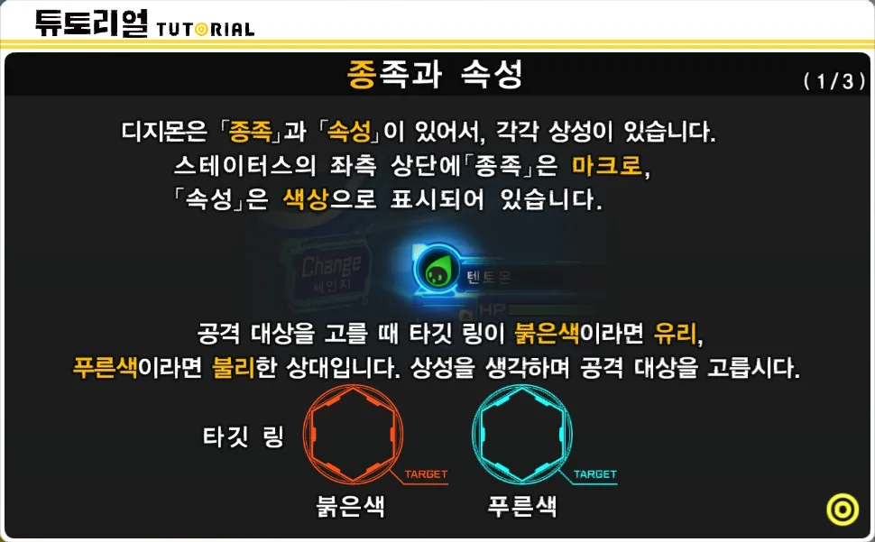
디지몬은 「종족」과 「속성」이 있어서, 각각 상성이 있습니다. 스테이터스의 좌측 상단에 「종족」은 마크로, 「속성」은 색상으로 표시되어 있습니다. 공격 대상을 고를 때 타깃 링이 붉은색이라면 유리, 푸른색이라면 불리한 상대입니다. 상성을 생각하며 공격 대상을 고릅시다.
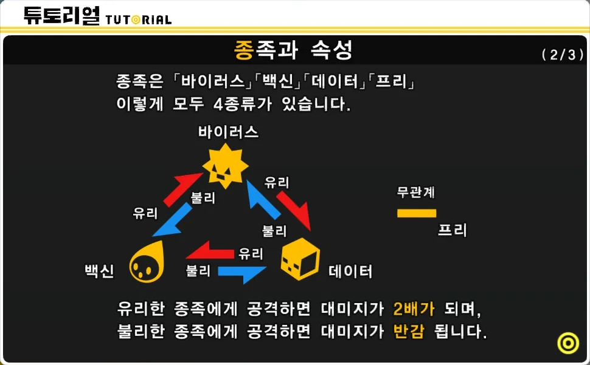
종족은 「바이러스」「백신」「데이터」「프리」 이렇게 모두 4종류가 있습니다. 유리한 종족에게 공격하면 대미지가 2배가 되며, 불리한 종족에게 공격하면 대미지가 반감 됩니다. (백신→바이러스→데이터→백신 순으로 유리, 프리는 무관계)
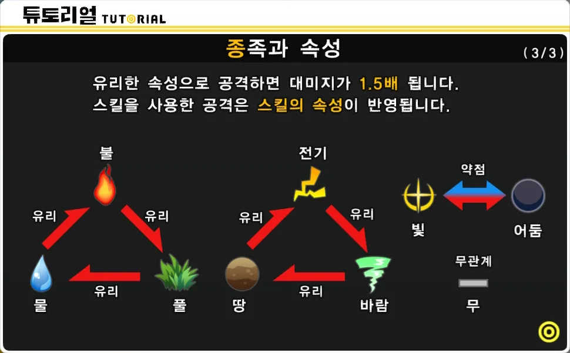
유리한 속성으로 공격하면 대미지가 1.5배 됩니다. 스킬을 사용한 공격은 스킬의 속성이 반영됩니다. (불→풀→물→불, 전기→바람→땅→전기 순으로 유리, 빛과 어둠은 서로 약점, 무는 무관계)
상태이상의 종류
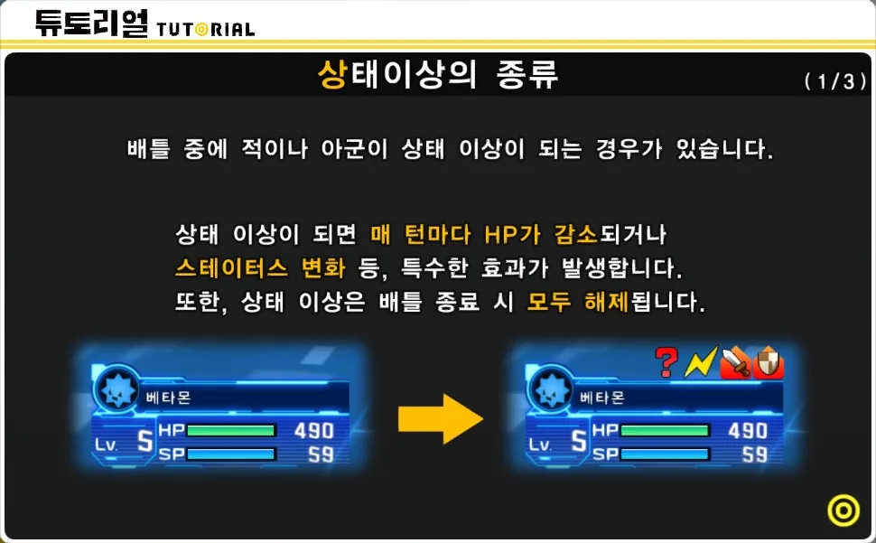
배틀 중에 적이나 아군이 상태 이상이 되는 경우가 있습니다. 상태 이상이 되면 매 턴마다 HP가 감소되거나 스테이터스 변화 등, 특수한 효과가 발생합니다. 또한, 상태 이상은 배틀 종료 시 모두 해제됩니다.
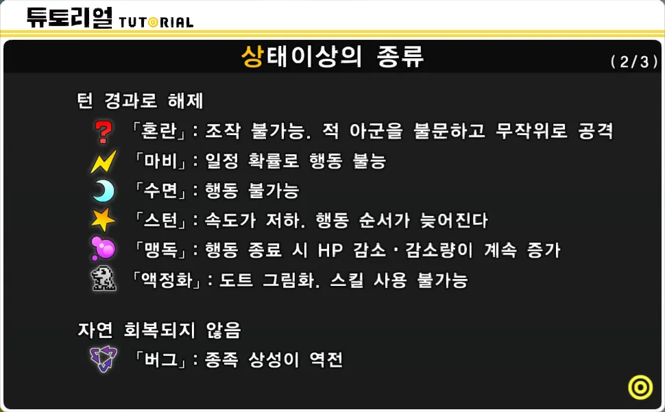
턴 경과로 해제: 「혼란」 조작 불가능. 적 아군을 불문하고 무작위로 공격 / 「마비」 일정 확률로 행동 불능 / 「수면」 행동 불가능 / 「스턴」 속도가 저하. 행동 순서가 늦어진다 / 「맹독」 행동 종료 시 HP 감소·감소량이 계속 증가 / 「액정화」 도트 그림화. 스킬 사용 불가능. 자연 회복되지 않음: 「버그」 종족 상성이 역전.
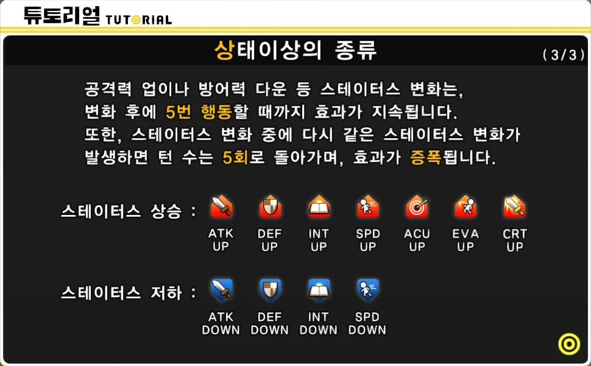
공격력 업이나 방어력 다운 등 스테이터스 변화는, 변화 후에 5번 행동할 때까지 효과가 지속됩니다. 또한, 스테이터스 변화 중에 다시 같은 스테이터스 변화가 발생하면 턴 수는 5회로 돌아가며, 효과가 증폭됩니다. 스테이터스 상승: ATK·DEF·INT·SPD·ACU·EVA·CRT UP / 스테이터스 저하: ATK·DEF·INT·SPD DOWN.
크로스 콤보와 우정
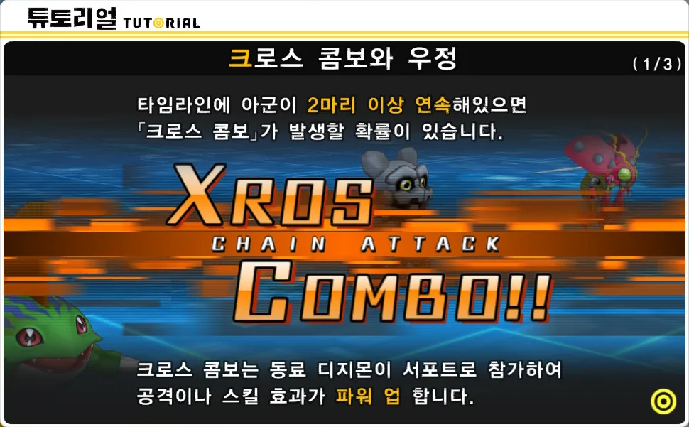
타임라인에 아군이 2마리 이상 연속해있으면 「크로스 콤보」가 발생할 확률이 있습니다. 크로스 콤보는 동료 디지몬이 서포트로 참가하여 공격이나 스킬 효과가 파워 업 합니다.
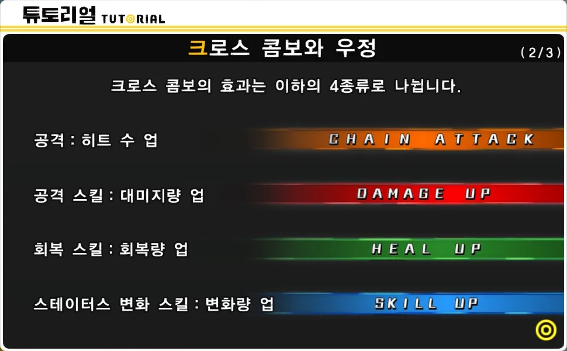
크로스 콤보의 효과는 이하의 4종류로 나뉩니다. 공격: 히트 수 업 / 공격 스킬: 대미지량 업 / 회복 스킬: 회복량 업 / 스테이터스 변화 스킬: 변화량 업.
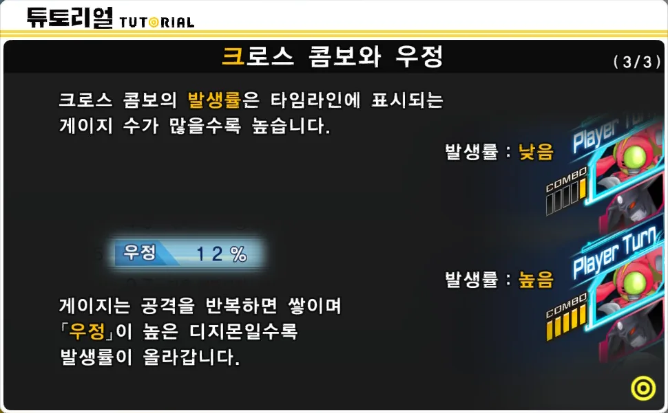
크로스 콤보의 발생률은 타임라인에 표시되는 게이지 수가 많을수록 높습니다. 게이지는 공격을 반복하면 쌓이며 「우정」이 높은 디지몬일수록 발생률이 올라갑니다.
게스트 캐릭터
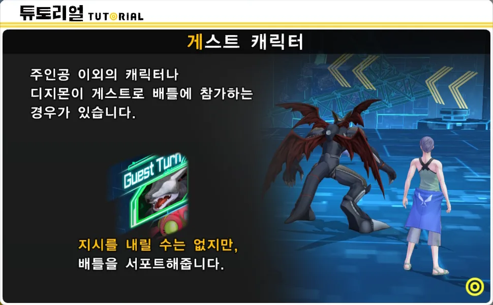
주인공 이외의 캐릭터나 디지몬이 게스트로 배틀에 참가하는 경우가 있습니다. 지시를 내릴 수는 없지만, 배틀을 서포트해줍니다.
디지몬
스킬 세팅
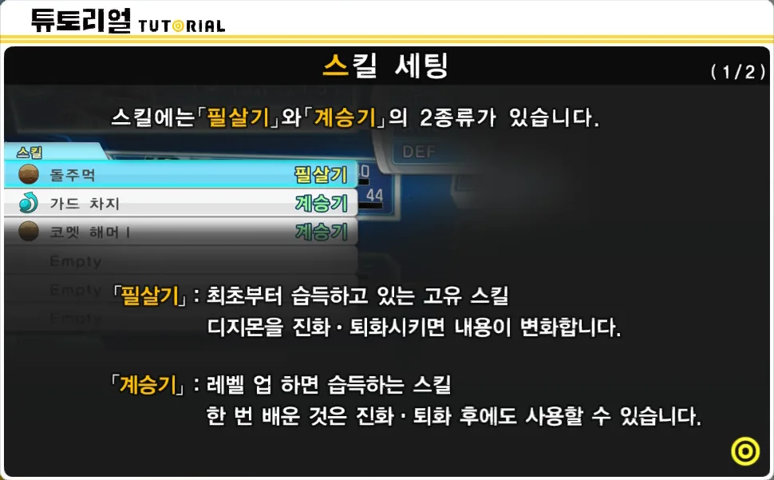
스킬에는 「필살기」와 「계승기」의 2종류가 있습니다. 「필살기」: 최초부터 습득하고 있는 고유 스킬. 디지몬을 진화·퇴화시키면 내용이 변화합니다. 「계승기」: 레벨 업 하면 습득하는 스킬. 한 번 배운 것은 진화·퇴화 후에도 사용할 수 있습니다.
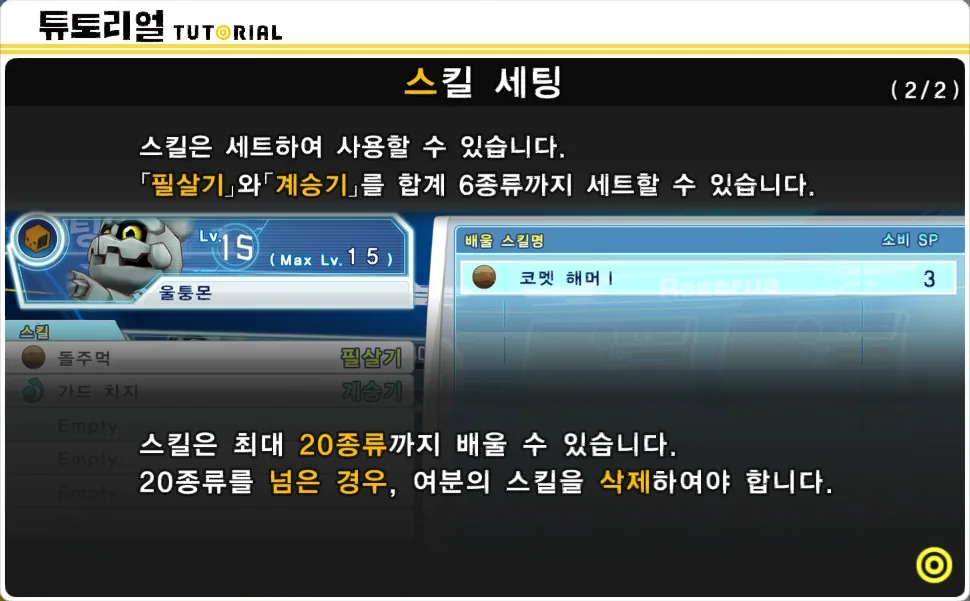
스킬은 세트하여 사용할 수 있습니다. 「필살기」와 「계승기」를 합계 6종류까지 세트할 수 있습니다. 스킬은 최대 20종류까지 배울 수 있습니다. 20종류를 넘은 경우, 여분의 스킬을 삭제하여야 합니다.
디지몬의 액세서리
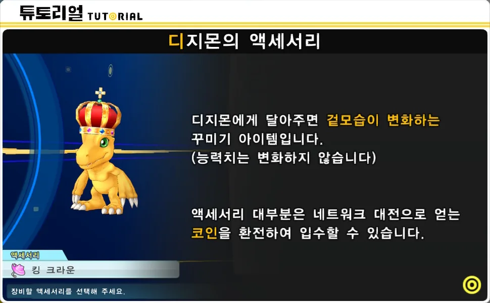
디지몬에게 달아주면 겉모습이 변화하는 꾸미기 아이템입니다. (능력치는 변화하지 않습니다) 액세서리 대부분은 네트워크 대전으로 얻는 코인을 환전하여 입수할 수 있습니다.
서포트 스킬
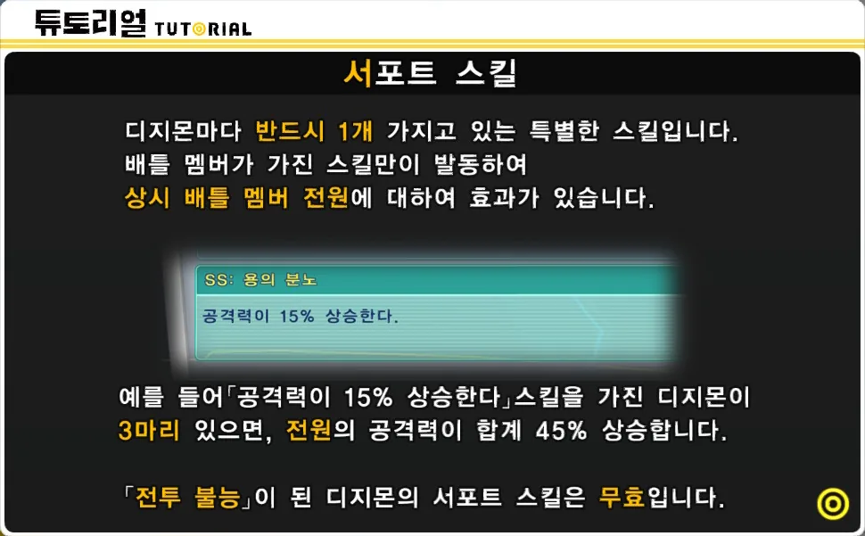
디지몬마다 반드시 1개 가지고 있는 특별한 스킬입니다. 배틀 멤버가 가진 스킬만이 발동하여 상시 배틀 멤버 전원에 대하여 효과가 있습니다. 예를 들어 「공격력이 15% 상승한다」 스킬을 가진 디지몬이 3마리 있으면, 전원의 공격력이 합계 45% 상승합니다. 「전투 불능」이 된 디지몬의 서포트 스킬은 무효입니다.
도감 등록
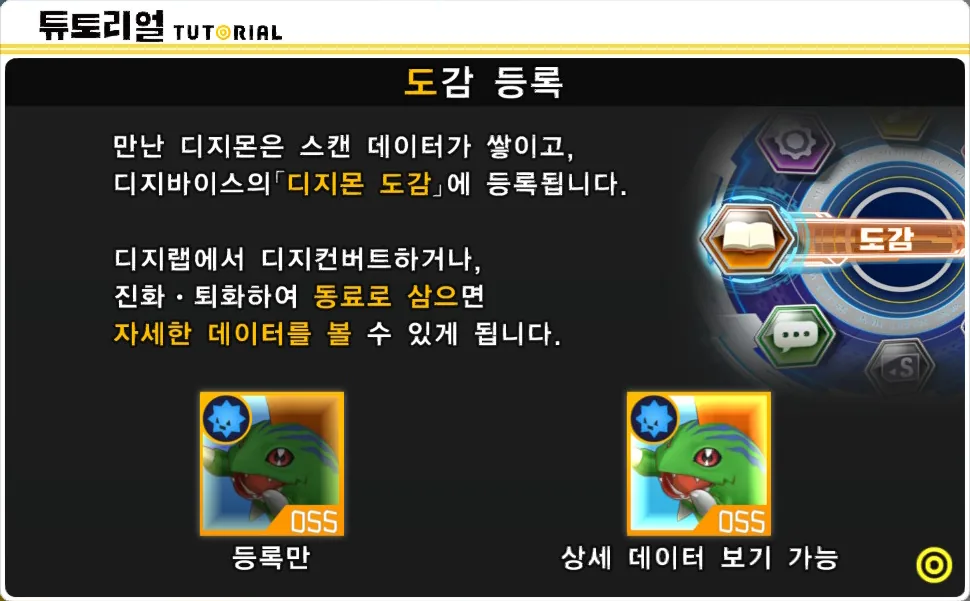
만난 디지몬은 스캔 데이터가 쌓이고, 디지바이스의 「디지몬 도감」에 등록됩니다. 디지랩에서 디지컨버트하거나, 진화·퇴화하여 동료로 삼으면 자세한 데이터를 볼 수 있게 됩니다. (등록만 / 상세 데이터 보기 가능)
디지몬 도감
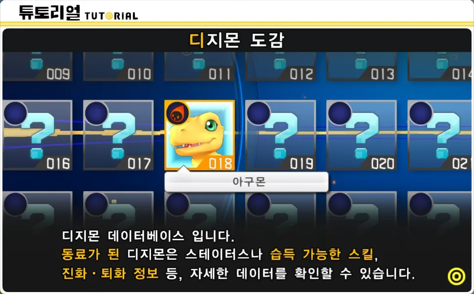
디지몬 데이터베이스 입니다. 동료가 된 디지몬은 스테이터스나 습득 가능한 스킬, 진화·퇴화 정보 등, 자세한 데이터를 확인할 수 있습니다.
디지랩
디지랩
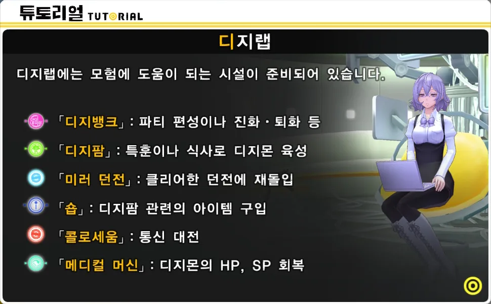
디지랩에는 모험에 도움이 되는 시설이 준비되어 있습니다. 「디지뱅크」: 파티 편성이나 진화·퇴화 등 / 「디지팜」: 특훈이나 식사로 디지몬 육성 / 「미러 던전」: 클리어한 던전에 재돌입 / 「숍」: 디지팜 관련의 아이템 구입 / 「콜로세움」: 통신 대전 / 「메디컬 머신」: 디지몬의 HP, SP 회복.
미러 던전
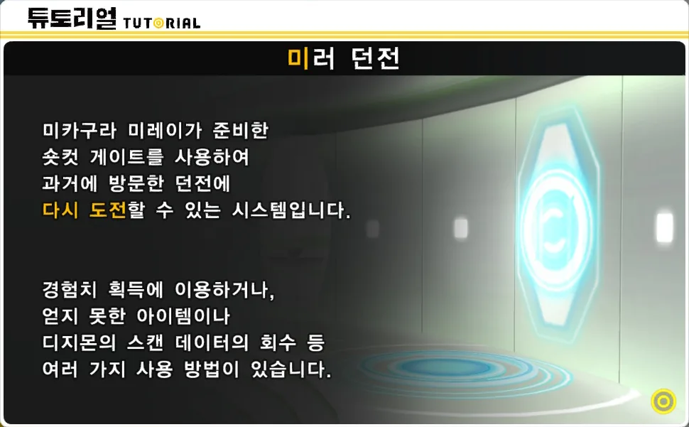
미카구라 미레이가 준비한 숏컷 게이트를 사용하여 과거에 방문한 던전에 다시 도전할 수 있는 시스템입니다. 경험치 획득에 이용하거나, 얻지 못한 아이템이나 디지몬의 스캔 데이터의 회수 등 여러 가지 사용 방법이 있습니다.
디지뱅크
디지몬 이동
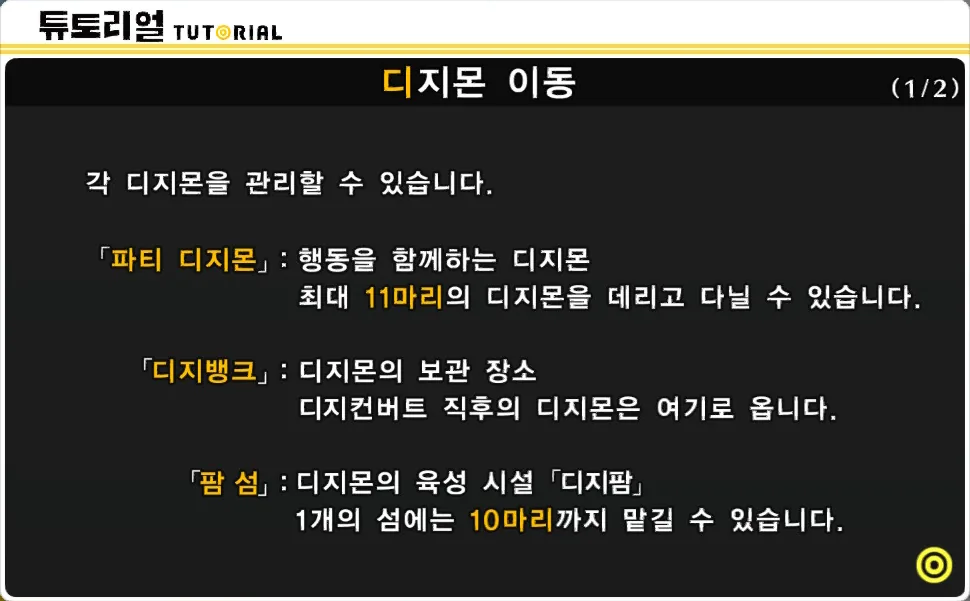
각 디지몬을 관리할 수 있습니다. 「파티 디지몬」: 행동을 함께하는 디지몬. 최대 11마리의 디지몬을 데리고 다닐 수 있습니다. 「디지뱅크」: 디지몬의 보관 장소. 디지컨버트 직후의 디지몬은 여기로 옵니다. 「팜 섬」: 디지몬의 육성 시설 「디지팜」. 1개의 섬에는 10마리까지 맡길 수 있습니다.
진화와 퇴화
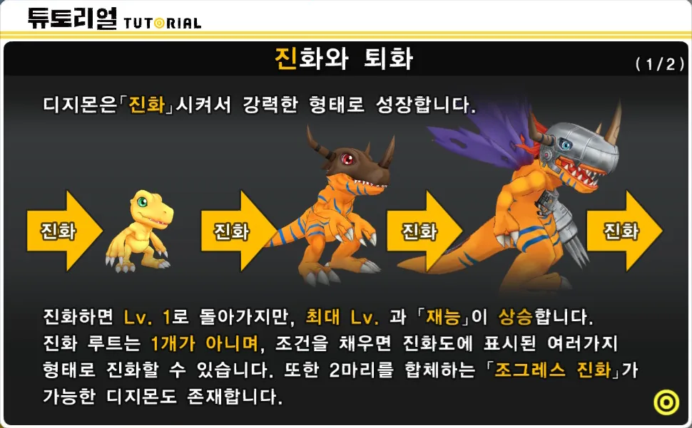
디지몬은 「진화」시켜서 강력한 형태로 성장합니다. 진화하면 Lv. 1로 돌아가지만, 최대 Lv.과 「재능」이 상승합니다. 진화 루트는 1개가 아니며, 조건을 채우면 진화도에 표시된 여러가지 형태로 진화할 수 있습니다. 또한 2마리를 합체하는 「조그레스 진화」가 가능한 디지몬도 존재합니다.
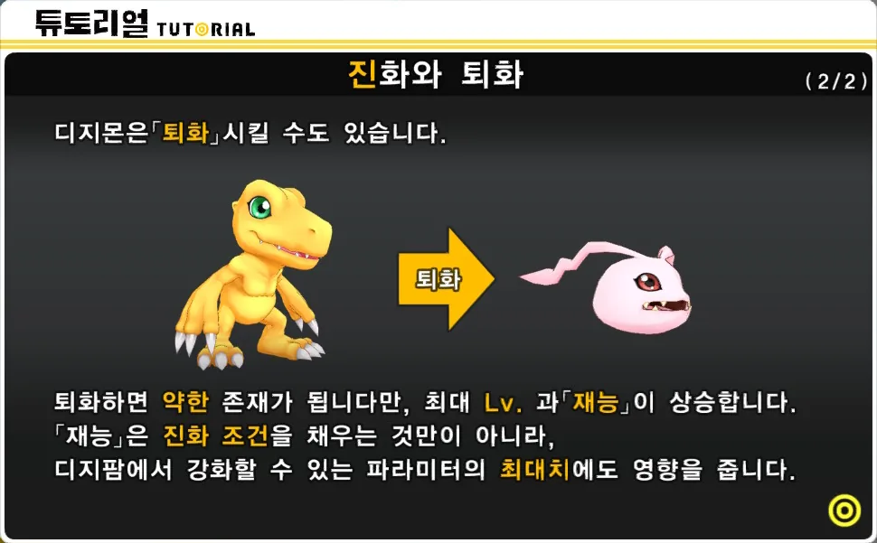
디지몬은 「퇴화」시킬 수도 있습니다. 퇴화하면 약한 존재가 됩니다만, 최대 Lv.과 「재능」이 상승합니다. 「재능」은 진화 조건을 채우는 것만이 아니라, 디지팜에서 강화할 수 있는 파라미터의 최대치에도 영향을 줍니다.
디지몬 로드
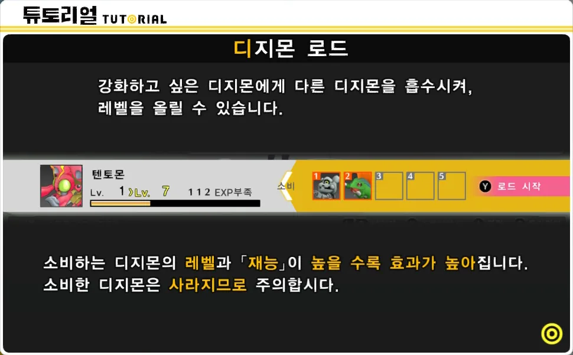
강화하고 싶은 디지몬에게 다른 디지몬을 흡수시켜, 레벨을 올릴 수 있습니다. 소비하는 디지몬의 레벨과 「재능」이 높을 수록 효과가 높아집니다. 소비한 디지몬은 사라지므로 주의합시다.
디지컨버트
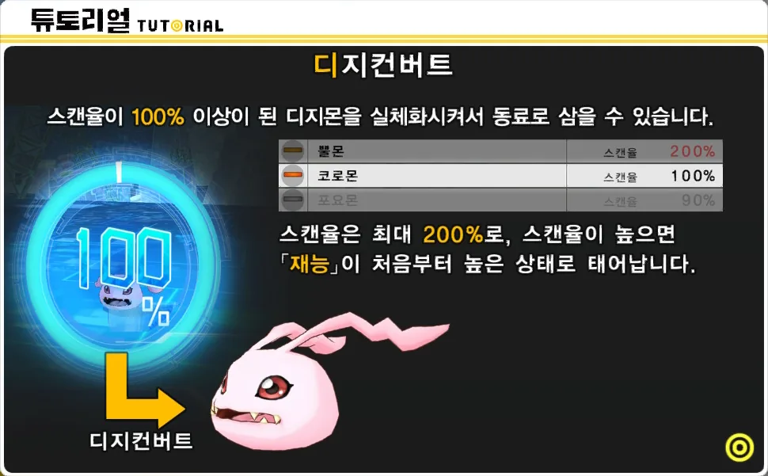
스캔율이 100% 이상이 된 디지몬을 실체화시켜서 동료로 삼을 수 있습니다. 스캔율은 최대 200%로, 스캔율이 높으면 「재능」이 처음부터 높은 상태로 태어납니다.
데이터로 돌린다
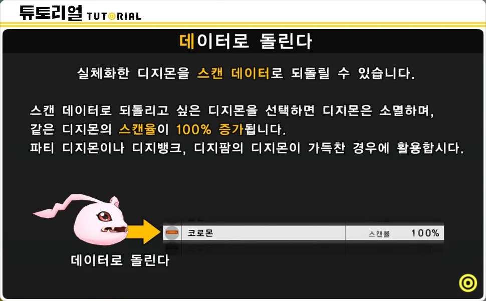
실체화한 디지몬을 스캔 데이터로 되돌릴 수 있습니다. 스캔 데이터로 되돌리고 싶은 디지몬을 선택하면 디지몬은 소멸하며, 같은 디지몬의 스캔율이 100% 증가됩니다. 파티 디지몬이나 디지뱅크, 디지팜의 디지몬이 가득찬 경우에 활용합시다.
파티 메모리와 소비 메모리
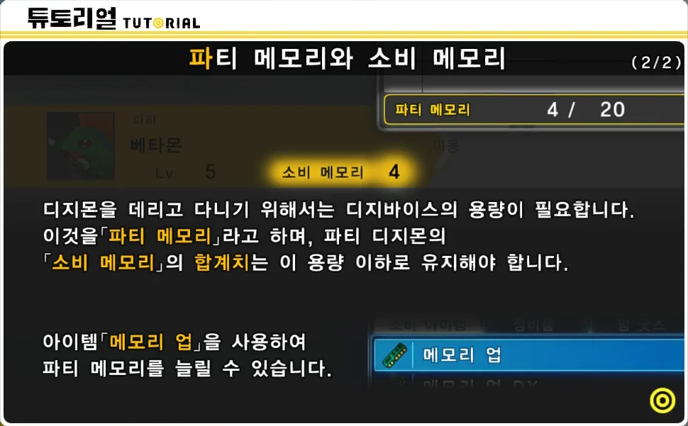
디지몬을 데리고 다니기 위해서는 디지바이스의 용량이 필요합니다. 이것을 「파티 메모리」라고 하며, 파티 디지몬의 「소비 메모리」의 합계치는 이 용량 이하로 유지해야 합니다. 아이템 「메모리 업」을 사용하여 파티 메모리를 늘릴 수 있습니다.
디지팜
디지팜이란
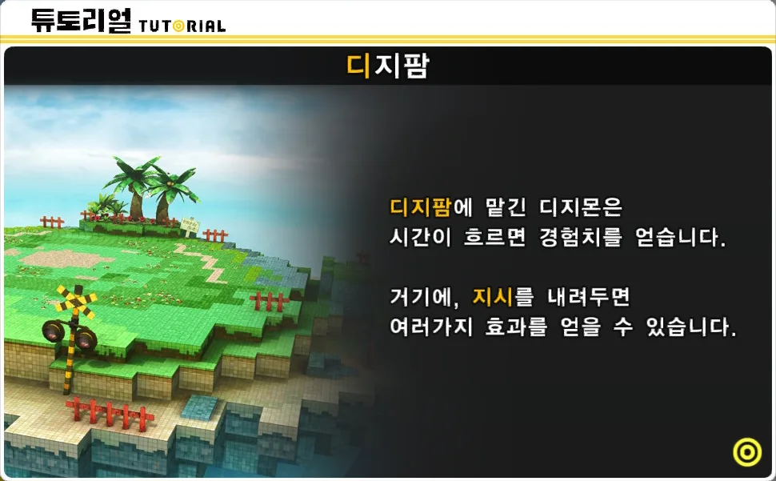
디지팜에 맡긴 디지몬은 시간이 흐르면 경험치를 얻습니다. 거기에, 지시를 내려두면 여러가지 효과를 얻을 수 있습니다.
섬의 확장
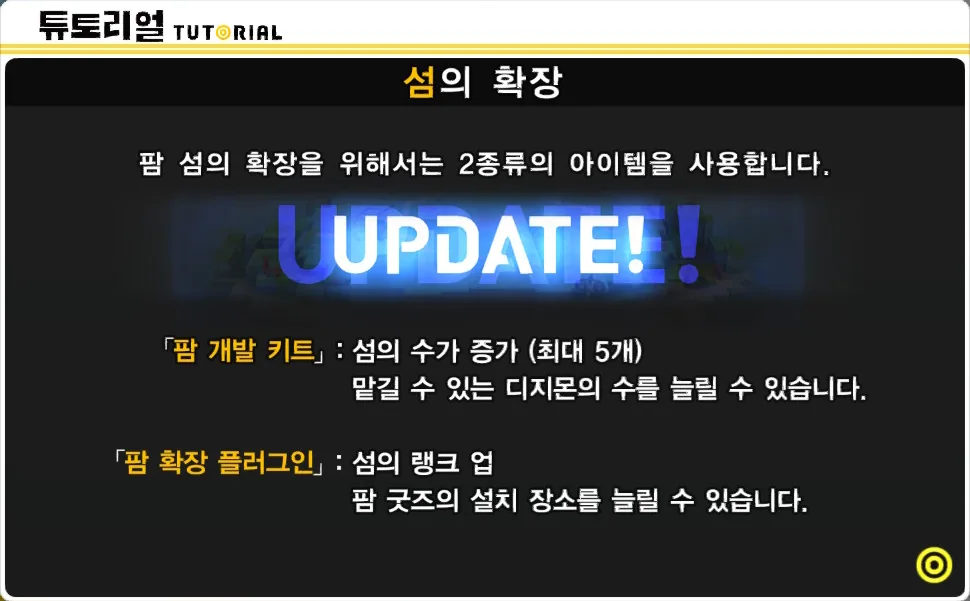
팜 섬의 확장을 위해서는 2종류의 아이템을 사용합니다. 「팜 개발 키트」: 섬의 수가 증가 (최대 5개). 맡길 수 있는 디지몬의 수를 늘릴 수 있습니다. 「팜 확장 플러그인」: 섬의 랭크 업. 팜 굿즈의 설치 장소를 늘릴 수 있습니다.
지시하기(특훈/개발/조사)
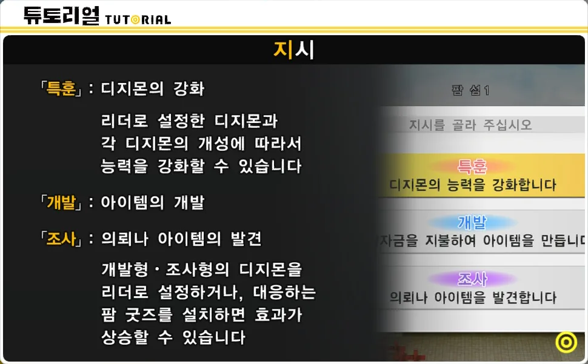
「특훈」: 디지몬의 강화. 리더로 설정한 디지몬과 각 디지몬의 개성에 따라서 능력을 강화할 수 있습니다. 「개발」: 아이템의 개발. 「조사」: 의뢰나 아이템의 발견. 개발형·조사형의 디지몬을 리더로 설정하거나, 대응하는 팜 굿즈를 설치하면 효과가 상승할 수 있습니다.
리더 변경
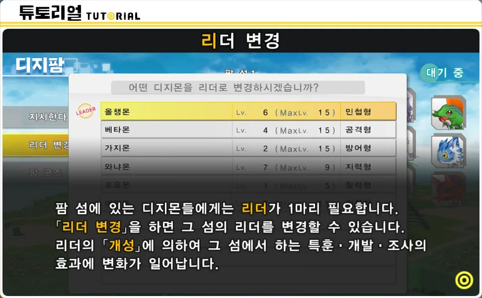
팜 섬에 있는 디지몬들에게는 리더가 1마리 필요합니다. 「리더 변경」을 하면 그 섬의 리더를 변경할 수 있습니다. 리더의 「개성」에 의하여 그 섬에서 하는 특훈·개발·조사의 효과에 변화가 일어납니다.
팜 굿즈
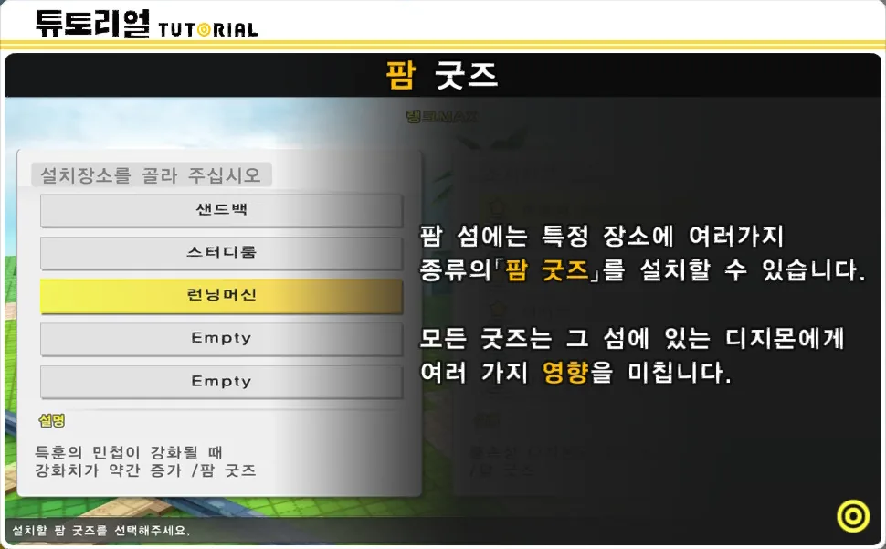
팜 섬에는 특정 장소에 여러가지 종류의 「팜 굿즈」를 설치할 수 있습니다. 모든 굿즈는 그 섬에 있는 디지몬에게 여러 가지 영향을 미칩니다.
디지몬과의 접촉
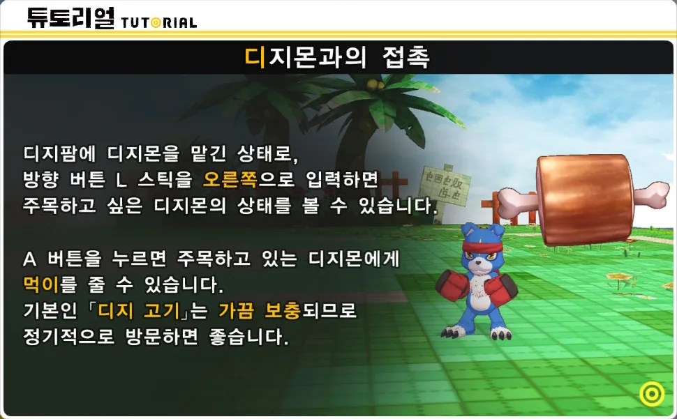
디지팜에 디지몬을 맡긴 상태로, 방향 버튼 L 스틱을 오른쪽으로 입력하면 주목하고 싶은 디지몬의 상태를 볼 수 있습니다. A 버튼을 누르면 주목하고 있는 디지몬에게 먹이를 줄 수 있습니다. 기본인 「디지 고기」는 가끔 보충되므로 정기적으로 방문하면 좋습니다.
네트워크
플레이어 설정
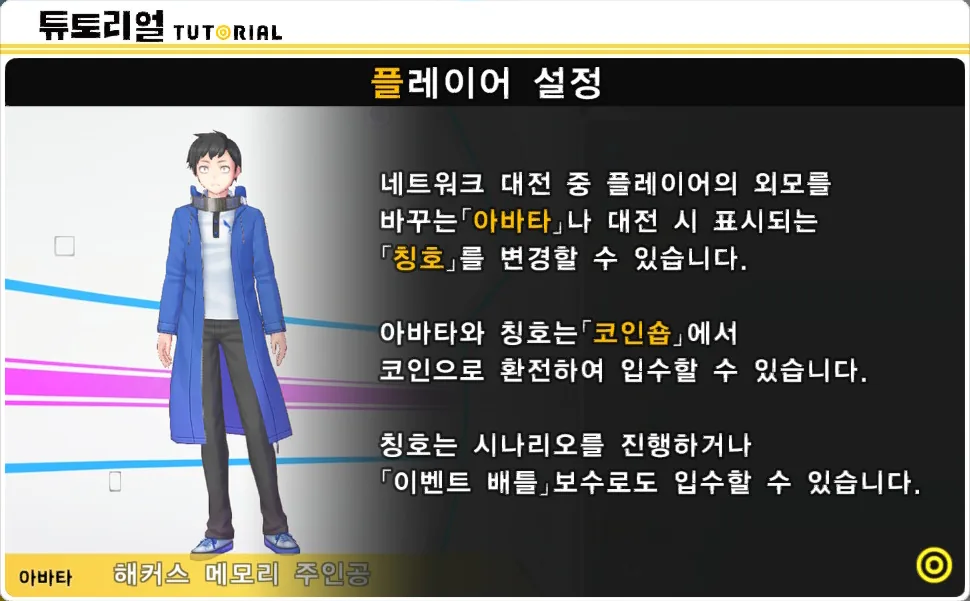
네트워크 대전 중 플레이어의 외모를 바꾸는 「아바타」나 대전 시 표시되는 「칭호」를 변경할 수 있습니다. 아바타와 칭호는 「코인숍」에서 코인으로 환전하여 입수할 수 있습니다. 칭호는 시나리오를 진행하거나 「이벤트 배틀」 보수로도 입수할 수 있습니다.
사무소
화이트 보드(의뢰)
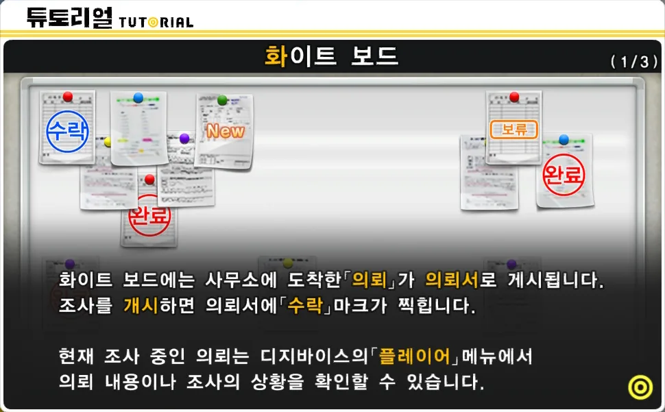
화이트 보드에는 사무소에 도착한 「의뢰」가 의뢰서로 게시됩니다. 조사를 개시하면 의뢰서에 「수락」 마크가 찍힙니다. 현재 조사 중인 의뢰는 디지바이스의 「플레이어」 메뉴에서 의뢰 내용이나 조사의 상황을 확인할 수 있습니다.
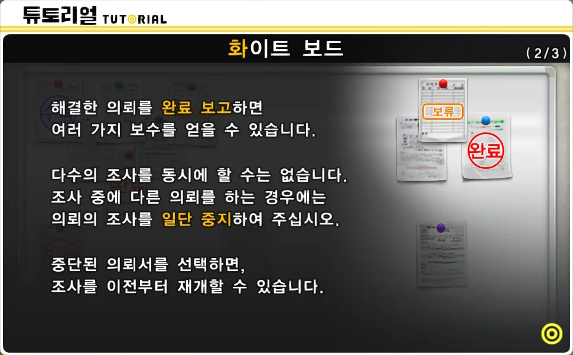
해결한 의뢰를 완료 보고하면 여러 가지 보수를 얻을 수 있습니다. 다수의 조사를 동시에 할 수는 없습니다. 조사 중에 다른 의뢰를 하는 경우에는 의뢰의 조사를 일단 중지하여 주십시오. 중단된 의뢰서를 선택하면, 조사를 이전부터 재개할 수 있습니다.
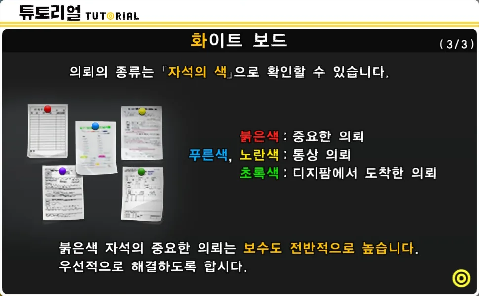
의뢰의 종류는 「자석의 색」으로 확인할 수 있습니다. 붉은색: 중요한 의뢰 / 푸른색, 노란색: 통상 의뢰 / 초록색: 디지팜에서 도착한 의뢰. 붉은색 자석의 중요한 의뢰는 보수도 전반적으로 높습니다. 우선적으로 해결하도록 합시다.
디지라인
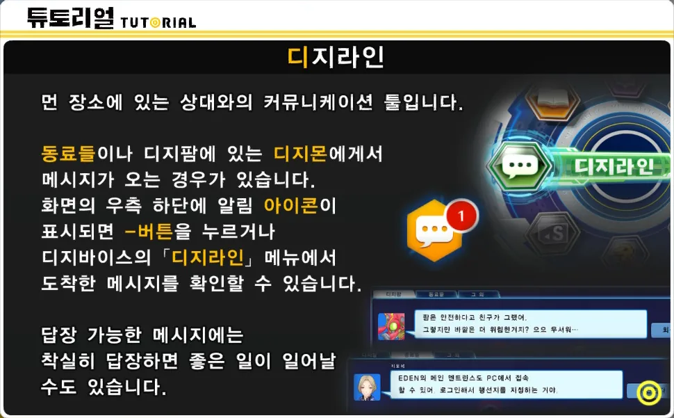
먼 장소에 있는 상대와의 커뮤니케이션 툴입니다. 동료들이나 디지팜에 있는 디지몬에게서 메시지가 오는 경우가 있습니다. 화면의 우측 하단에 알림 아이콘이 표시되면 -버튼을 누르거나 디지바이스의 「디지라인」 메뉴에서 도착한 메시지를 확인할 수 있습니다. 답장 가능한 메시지에는 착실히 답장하면 좋은 일이 일어날 수도 있습니다.
디지몬 메달
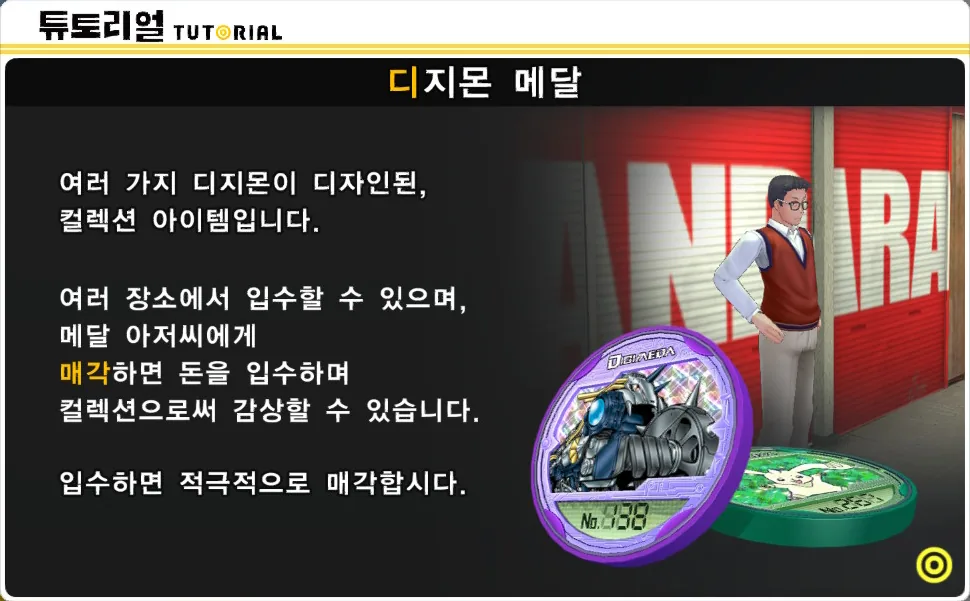
여러 가지 디지몬이 디자인된, 컬렉션 아이템입니다. 여러 장소에서 입수할 수 있으며, 메달 아저씨에게 매각하면 돈을 입수하며 컬렉션으로써 감상할 수 있습니다. 입수하면 적극적으로 매각합시다.
플레이어 갈아입히기
코스튬을 가지고 있다면 쿠레미 탐정사무소에 있는 옷걸이를 조사해서 갈아입힐 수 있습니다.
해킹 스킬
해킹 스킬
필드에서 이동 중에 Y 버튼을 눌러서 해킹 스킬 메뉴를 열면, 디지몬의 힘을 빌려서 여러가지 능력을 행사할 수 있습니다. 스킬을 사용하려면 파티 디지몬이 조건을 달성해야 합니다. 스킬의 사용 조건은 디지바이스의 「플레이어」 메뉴에서 확인할 수 있습니다.
해킹 스킬 「월 크랙」
진로를 가로막는 보안 장벽 「방화벽」을 해제하면 전진할 수 있게 됩니다. 방화벽에는 견고함에 따라 레벨이 있어서 레벨에 따른 월 크랙이 아니면 해제할 수 없습니다.
해킹 스킬 「스텔스 하이드」
투명 상태가 되어 감지되지 않게 됩니다. 계정의 정보도 은닉할 수 있으므로, 흔적을 남기지 않고 조사할 수 있습니다.
해킹 스킬 「코드 스캔」
대상에 걸린 프로텍트 코드를 해제하고, 록을 해제합니다. 또한, 암호화된 데이터를 해독하고 정보를 볼 수 있는 것도 가능하게 합니다.
해킹 스킬 「카피 앤 페이스트」
대상의 색채 데이터를 복사하여 일시적으로 보존하고 무색의 대좌에 페이스트합니다. 바르게 배치하면 보안이 해제되어 앞으로 나아갈 수 있습니다. (다른 에어리어에 이동하면 카피 데이터는 파기됩니다)